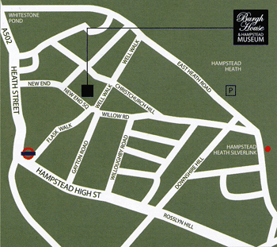

The team behind H&A wedding productions is proud to present some obscure but handy information about the Big Day, which should enhance your wedding experience.
1. Location of the ceremony and 'après-oui'
Burgh House is located at:
New End Square
Hampstead
London NW3 1LT
The map below points the way, but Click here to have further help from our friends at Google.

2. Program(me)
3ish - feel free to meet Andrew and other nervous revellers at Hampstead's Old White Bear for a cordial cordial
4:15 - musical chairs at Burgh House for those who wish to scramble for seats
4:30 - the nice person from Camden Council will point the way to troth
5:00 - eat, drink and be married
10:00 - sensible people go home
Afta' afta' - a local watering hole will be pried open for patronage
NB: as much as we'll miss them, we trust all children will be having a grand time with babysitters, nannies and assorted relatives while you and we while away the evening.
Many of you will be coming from Europe and beyond, and we want to spend as much time with you as possible. You can count on there being some sort of gathering on Sunday for brunch, so do try to get that later train or flight.
3. Conveyance thither and thence
Woe betide those who seek a parking spot in Hampstead. Consider instead joining the more than three million people who use mass transportation in London every day:
- By Tube to Hampstead station: the Edgeware branch of the Northern line runs from key junctions such as King's Cross, Tottenham Court Road and Waterloo.
- By train to Hampstead Heath station: see more of London by taking the London Overland train.
- Buses recommended for hardy travelers only
For those following David's diktat "never be the last to leave, and always leave before you do", we're sure these cabby companies will be happy to help:
- Addison Lee: +44 20 7387 8888
- Chalk Farm Radio Cars: +44 20 7722 2111
4. Duds/Kit
Hermione, we understand, will be wearing a chic ivory ensemble. Copycats discouraged. Hats unnecessary. Andrew will don a morning suit. Those who wish to dust theirs off are more than welcome to do so. Otherwise, lounge (i.e. business) suits will suit just fine.
5. Lodging
Premier Inn, Belsize Park/Hampstead: +44 20 7443 7500
Holiday Inn Express, Finchley Road/Hampstead: +44 20 7433 6666
Otherwise we trust that you have Google, TripAdvisor or - even better - friends with spare rooms in London.
5. Gifts and oblations
Please don't forget to let us know whether or not you're coming (at andrewhermionewedding@gmail.com).
Finally, we're here to help:
Andrew: +44 7766 594 854
Hermione: +44 7899 986 604
6. Friday and Sunday activities
Drinks on Friday from 7 p.m. - The Coach Makers
Upstairs at 88 Marylebone Lane W1U 2PY
+44 20 7224 4022
Nearest station: Bond Street tube station
Brunch on Sunday from 11:45 a.m. - The Larrik Pub
32 Crawford Place, Marylebone, W1H 5NN
+44 207 723 0066
Nearest station: Edgeware Road or Baker Street tube station